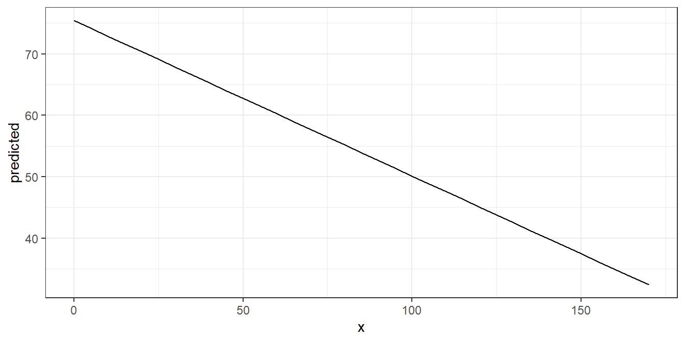
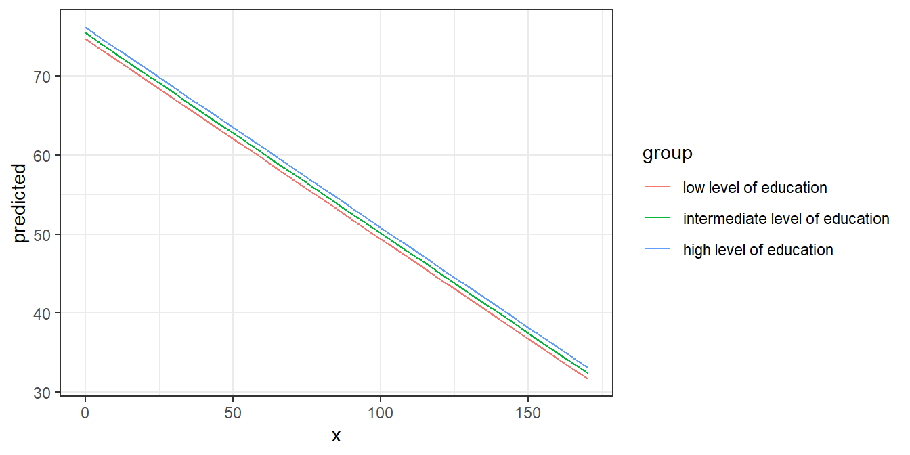
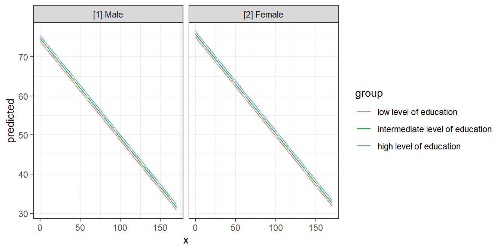
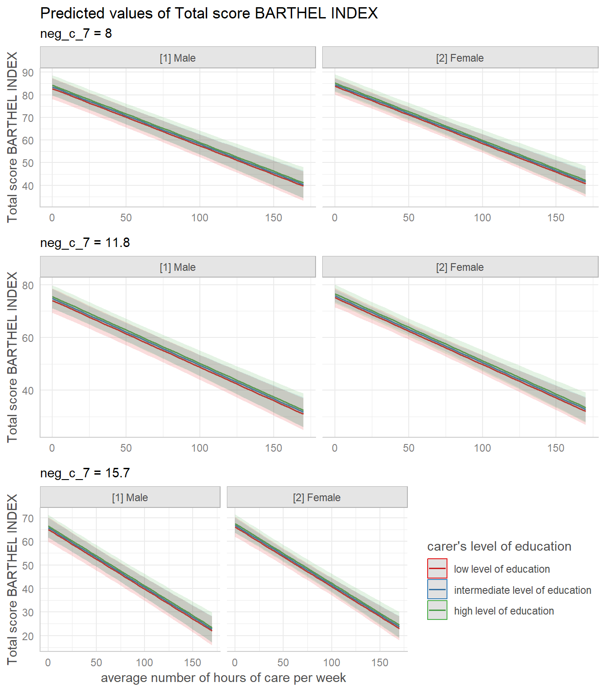
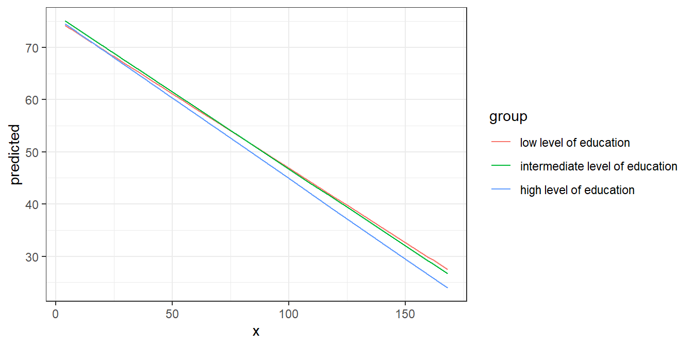
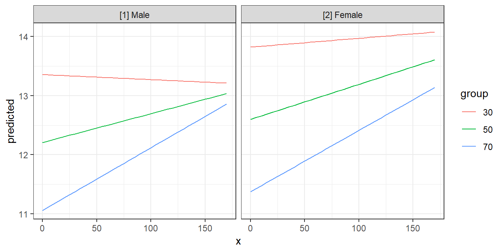
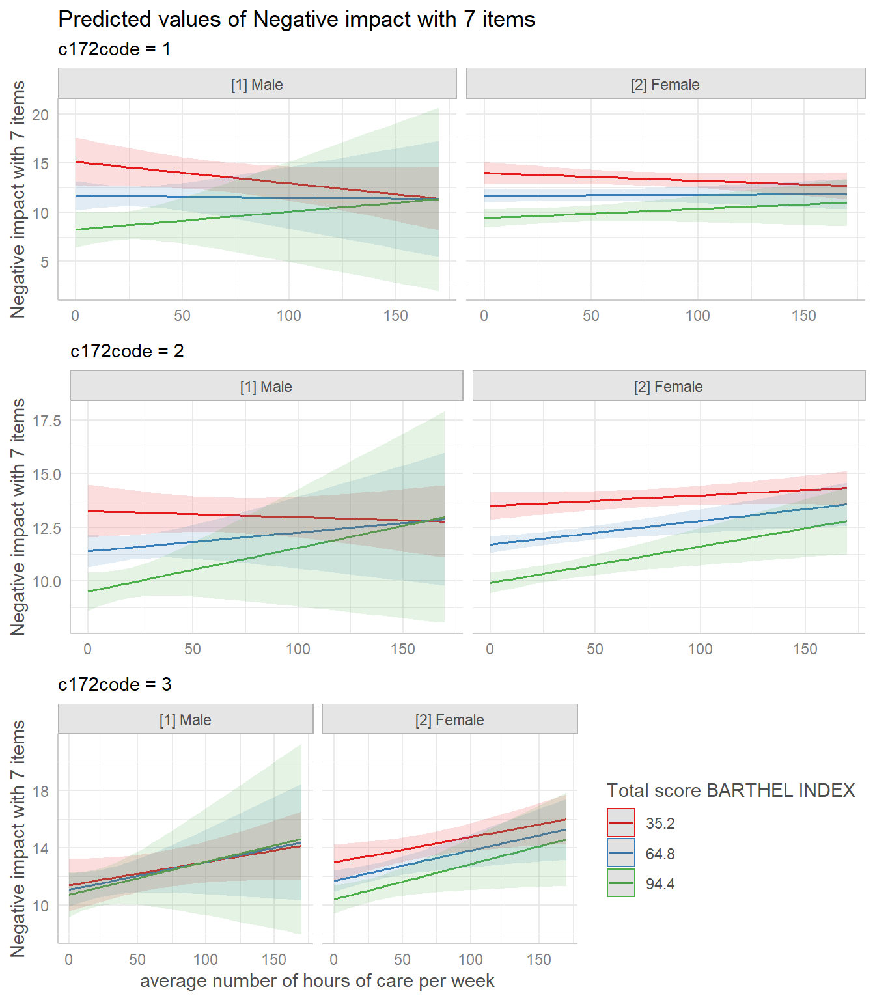
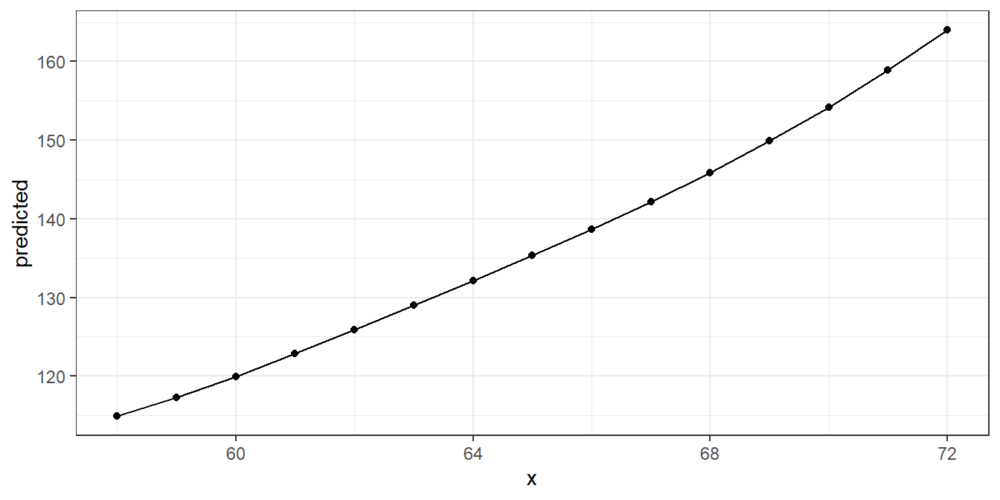

ggeffects: Marginal Effects of Regression Models
Daniel Lüdecke
2019-12-16
ggeffects.RmdAim of the ggeffects-package
Results of regression models are typically presented as tables that are easy to understand. For more complex models that include interaction or quadratic / spline terms, tables with numbers are less helpful and more difficult to interpret. In such cases, the visualization of marginal effects is far easier to understand and allows to intuitively get the idea of how predictors and outcome are associated, even for complex models.
ggeffects computes marginal effects (or: estimated marginal means) at the mean (MEM) or at representative values (MER) from statistical models and returns the result as tidy data frame, especially for further use with ggplot. Definitions can be found here.
Since the focus lies on plotting the data (the marginal effects), at least one model term needs to be specified for which the effects are computed. It is also possible to compute marginal effects for model terms, grouped by the levels of another model’s predictor. The package also allows plotting marginal effects for two-, three- or four-way-interactions, or for specific values of a model term only. Examples are shown below.
Short technical note
ggpredict(), ggemmeans() and ggeffect() always return predicted values for the response of a model (or response distribution for Bayesian models).
Typically, ggpredict() returns confidence intervals based on the standard errors as returned by the predict()-function, assuming normal distribution (+/- 1.96 * SE). If predict() for a certain class does not return standard errors (for example, merMod-objects), these are calculated manually, by following steps: matrix-multiply X by the parameter vector B to get the predictions, then extract the variance-covariance matrix V of the parameters and compute XVX' to get the variance-covariance matrix of the predictions. The square-root of the diagonal of this matrix represent the standard errors of the predictions, which are then multiplied by 1.96 for the confidence intervals.
For mixed models, if type = "re" or type = "re.zi", the uncertainty in the random effects is accounted for when calculating the standard errors. Hence, in such cases, the intervals may be considered as prediction intervals.
Consistent and tidy structure
The returned data frames always have the same, consistent structure and column names, so it’s easy to create ggplot-plots without the need to re-write the arguments to be mapped in each ggplot-call. x and predicted are the values for the x- and y-axis. conf.low and conf.high could be used as ymin and ymax aesthetics for ribbons to add confidence bands to the plot. group can be used as grouping-aesthetics, or for faceting.
The examples shown here mostly use ggplot2-code for the plots, however, there is also a plot()-method, which is described in the vignette Plotting Marginal Effects.
Marginal effects at the mean
ggpredict() computes predicted values for all possible levels and values from a model’s predictors. In the simplest case, a fitted model is passed as first argument, and the term in question as second argument. Use the raw name of the variable for the terms-argument only - you don’t need to write things like poly(term, 3) or I(term^2) for the terms-argument.
library(ggeffects)
data(efc)
fit <- lm(barthtot ~ c12hour + neg_c_7 + c161sex + c172code, data = efc)
ggpredict(fit, terms = "c12hour")
#>
#> # Predicted values of Total score BARTHEL INDEX
#> # x = average number of hours of care per week
#>
#> x | Predicted | SE | 95% CI
#> ---------------------------------------
#> 0 | 75.44 | 1.12 | [73.26, 77.63]
#> 20 | 70.38 | 0.93 | [68.56, 72.19]
#> 45 | 64.05 | 0.84 | [62.39, 65.70]
#> 65 | 58.98 | 0.93 | [57.16, 60.80]
#> 85 | 53.91 | 1.12 | [51.71, 56.11]
#> 105 | 48.85 | 1.38 | [46.15, 51.55]
#> 125 | 43.78 | 1.67 | [40.52, 47.05]
#> 170 | 32.38 | 2.37 | [27.73, 37.03]
#>
#> Adjusted for:
#> * neg_c_7 = 11.84
#> * c161sex = 1.76
#> * c172code = 1.97As you can see, ggpredict() (and ggeffect() or ggemmeans()) has a nice print()-method, which takes care of printing not too many rows (but always an equally spaced range of values, including minimum and maximum value of the term in question) and giving some extra information. This is especially useful when predicted values are shown depending on the levels of other terms (see below).
The output shows the predicted values for the response at each value from the term c12hour. The data is already in shape for ggplot:
library(ggplot2)
theme_set(theme_bw())
mydf <- ggpredict(fit, terms = "c12hour")
ggplot(mydf, aes(x, predicted)) + geom_line()
Marginal effects at the mean by other predictors’ levels
The terms-argument accepts up to four model terms, where the second to fourth terms indicate grouping levels. This allows predictions for the term in question at different levels for other model terms:
ggpredict(fit, terms = c("c12hour", "c172code"))
#>
#> # Predicted values of Total score BARTHEL INDEX
#> # x = average number of hours of care per week
#>
#> # c172code = low level of education
#>
#> x | Predicted | SE | 95% CI
#> ---------------------------------------
#> 0 | 74.75 | 1.78 | [71.27, 78.23]
#> 30 | 67.15 | 1.59 | [64.04, 70.26]
#> 55 | 60.81 | 1.55 | [57.78, 63.85]
#> 85 | 53.22 | 1.66 | [49.96, 56.47]
#> 115 | 45.62 | 1.91 | [41.87, 49.37]
#> 170 | 31.69 | 2.59 | [26.60, 36.77]
#>
#> # c172code = intermediate level of education
#>
#> x | Predicted | SE | 95% CI
#> ---------------------------------------
#> 0 | 75.46 | 1.11 | [73.28, 77.65]
#> 30 | 67.87 | 0.87 | [66.17, 69.57]
#> 55 | 61.53 | 0.87 | [59.82, 63.24]
#> 85 | 53.93 | 1.13 | [51.73, 56.14]
#> 115 | 46.34 | 1.52 | [43.35, 49.32]
#> 170 | 32.40 | 2.38 | [27.75, 37.06]
#>
#> # c172code = high level of education
#>
#> x | Predicted | SE | 95% CI
#> ---------------------------------------
#> 0 | 76.18 | 1.72 | [72.82, 79.55]
#> 30 | 68.58 | 1.62 | [65.42, 71.75]
#> 55 | 62.25 | 1.66 | [59.01, 65.50]
#> 85 | 54.65 | 1.84 | [51.04, 58.26]
#> 115 | 47.05 | 2.14 | [42.85, 51.25]
#> 170 | 33.12 | 2.86 | [27.51, 38.73]
#>
#> Adjusted for:
#> * neg_c_7 = 11.84
#> * c161sex = 1.76Creating a ggplot is pretty straightforward: the colour-aesthetics is mapped with the group-column:
mydf <- ggpredict(fit, terms = c("c12hour", "c172code"))
ggplot(mydf, aes(x, predicted, colour = group)) + geom_line()
A second grouping structure can be defined, which will create another column named facet, which - as the name implies - might be used to create a facted plot:
mydf <- ggpredict(fit, terms = c("c12hour", "c172code", "c161sex"))
mydf
#>
#> # Predicted values of Total score BARTHEL INDEX
#> # x = average number of hours of care per week
#>
#> # c172code = low level of education
#> # c161sex = [1] Male
#>
#> x | Predicted | SE | 95% CI
#> ---------------------------------------
#> 0 | 73.95 | 2.35 | [69.35, 78.55]
#> 45 | 62.56 | 2.21 | [58.23, 66.88]
#> 85 | 52.42 | 2.31 | [47.90, 56.95]
#> 170 | 30.89 | 3.08 | [24.85, 36.94]
#>
#> # c172code = intermediate level of education
#> # c161sex = [1] Male
#>
#> x | Predicted | SE | 95% CI
#> ---------------------------------------
#> 0 | 74.67 | 1.85 | [71.06, 78.29]
#> 45 | 63.27 | 1.73 | [59.88, 66.66]
#> 85 | 53.14 | 1.91 | [49.40, 56.89]
#> 170 | 31.61 | 2.87 | [25.98, 37.24]
#>
#> # c172code = high level of education
#> # c161sex = [1] Male
#>
#> x | Predicted | SE | 95% CI
#> ---------------------------------------
#> 0 | 75.39 | 2.22 | [71.04, 79.74]
#> 45 | 63.99 | 2.18 | [59.73, 68.26]
#> 85 | 53.86 | 2.36 | [49.23, 58.49]
#> 170 | 32.33 | 3.26 | [25.95, 38.71]
#>
#> # c172code = low level of education
#> # c161sex = [2] Female
#>
#> x | Predicted | SE | 95% CI
#> ---------------------------------------
#> 0 | 75.00 | 1.83 | [71.41, 78.59]
#> 45 | 63.60 | 1.60 | [60.46, 66.74]
#> 85 | 53.46 | 1.70 | [50.13, 56.80]
#> 170 | 31.93 | 2.61 | [26.83, 37.04]
#>
#> # c172code = intermediate level of education
#> # c161sex = [2] Female
#>
#> x | Predicted | SE | 95% CI
#> ---------------------------------------
#> 0 | 75.71 | 1.23 | [73.31, 78.12]
#> 45 | 64.32 | 0.97 | [62.42, 66.21]
#> 85 | 54.18 | 1.21 | [51.81, 56.55]
#> 170 | 32.65 | 2.40 | [27.94, 37.36]
#>
#> # c172code = high level of education
#> # c161sex = [2] Female
#>
#> x | Predicted | SE | 95% CI
#> ---------------------------------------
#> 0 | 76.43 | 1.81 | [72.89, 79.98]
#> 45 | 65.03 | 1.71 | [61.68, 68.39]
#> 85 | 54.90 | 1.91 | [51.16, 58.65]
#> 170 | 33.37 | 2.89 | [27.70, 39.05]
#>
#> Adjusted for:
#> * neg_c_7 = 11.84
ggplot(mydf, aes(x, predicted, colour = group)) +
geom_line() +
facet_wrap(~facet)
Finally, a third differentation can be defined, creating another column named panel. In such cases, you may create multiple plots (for each value in panel). ggeffects takes care of this when you use plot() and automatically creates an integrated plot with all panels in one figure.

Marginal effects for each model term
If the term argument is either missing or NULL, marginal effects for each model term are calculated. The result is returned as a list, which can be plotted manually (or using the plot() function).
mydf <- ggpredict(fit)
mydf
#> $c12hour
#>
#> # Predicted values of Total score BARTHEL INDEX
#> # x = average number of hours of care per week
#>
#> x | Predicted | SE | 95% CI
#> ---------------------------------------
#> 0 | 75.44 | 1.12 | [73.26, 77.63]
#> 20 | 70.38 | 0.93 | [68.56, 72.19]
#> 45 | 64.05 | 0.84 | [62.39, 65.70]
#> 65 | 58.98 | 0.93 | [57.16, 60.80]
#> 85 | 53.91 | 1.12 | [51.71, 56.11]
#> 105 | 48.85 | 1.38 | [46.15, 51.55]
#> 125 | 43.78 | 1.67 | [40.52, 47.05]
#> 170 | 32.38 | 2.37 | [27.73, 37.03]
#>
#> Adjusted for:
#> * neg_c_7 = 11.84
#> * c161sex = 1.76
#> * c172code = 1.97
#>
#>
#> $neg_c_7
#>
#> # Predicted values of Total score BARTHEL INDEX
#> # x = Negative impact with 7 items
#>
#> x | Predicted | SE | 95% CI
#> --------------------------------------
#> 6 | 78.17 | 1.56 | [75.11, 81.22]
#> 8 | 73.57 | 1.21 | [71.21, 75.94]
#> 12 | 64.38 | 0.84 | [62.73, 66.03]
#> 14 | 59.79 | 0.97 | [57.88, 61.69]
#> 16 | 55.19 | 1.26 | [52.73, 57.66]
#> 20 | 46.00 | 2.02 | [42.04, 49.97]
#> 22 | 41.41 | 2.44 | [36.63, 46.19]
#> 28 | 27.63 | 3.73 | [20.31, 34.95]
#>
#> Adjusted for:
#> * c12hour = 42.20
#> * c161sex = 1.76
#> * c172code = 1.97
#>
#>
#> $c161sex
#>
#> # Predicted values of Total score BARTHEL INDEX
#> # x = carer's gender
#>
#> x | Predicted | SE | 95% CI
#> -------------------------------------
#> 1 | 63.96 | 1.73 | [60.57, 67.35]
#> 2 | 65.00 | 0.97 | [63.11, 66.90]
#>
#> Adjusted for:
#> * c12hour = 42.20
#> * neg_c_7 = 11.84
#> * c172code = 1.97
#>
#>
#> $c172code
#>
#> # Predicted values of Total score BARTHEL INDEX
#> # x = carer's level of education
#>
#> x | Predicted | SE | 95% CI
#> -------------------------------------
#> 1 | 64.06 | 1.55 | [61.01, 67.10]
#> 2 | 64.78 | 0.84 | [63.12, 66.43]
#> 3 | 65.49 | 1.62 | [62.32, 68.67]
#>
#> Adjusted for:
#> * c12hour = 42.20
#> * neg_c_7 = 11.84
#> * c161sex = 1.76
#>
#>
#> attr(,"class")
#> [1] "ggalleffects" "list"
#> attr(,"model.name")
#> [1] "fit"Two-Way, Three-Way- and Four-Way-Interactions
To plot the marginal effects of interaction terms, simply specify these terms in the terms-argument.
library(sjmisc)
data(efc)
# make categorical
efc$c161sex <- to_factor(efc$c161sex)
# fit model with interaction
fit <- lm(neg_c_7 ~ c12hour + barthtot * c161sex, data = efc)
# select only levels 30, 50 and 70 from continuous variable Barthel-Index
mydf <- ggpredict(fit, terms = c("barthtot [30,50,70]", "c161sex"))
ggplot(mydf, aes(x, predicted, colour = group)) + geom_line()
Since the terms-argument accepts up to four model terms, you can also compute marginal effects for a 3-way-interaction or 4-way-interaction. To plot the marginal effects of three interaction terms, just like before, specify all three terms in the terms-argument.
# fit model with 3-way-interaction
fit <- lm(neg_c_7 ~ c12hour * barthtot * c161sex, data = efc)
# select only levels 30, 50 and 70 from continuous variable Barthel-Index
mydf <- ggpredict(fit, terms = c("c12hour", "barthtot [30,50,70]", "c161sex"))
ggplot(mydf, aes(x, predicted, colour = group)) +
geom_line() +
facet_wrap(~facet)
4-way-interactions are rather confusing to print and plot. When plotting, multiple plots (for each level of the fourth interaction term) are plotted for the remaining three interaction terms. This can easily be done using the plot()-method.
# fit model with 4-way-interaction
fit <- lm(neg_c_7 ~ c12hour * barthtot * c161sex * c172code, data = efc)
# marginal effects for all 4 interaction terms
pr <- ggpredict(fit, c("c12hour", "barthtot", "c161sex", "c172code"))
# use plot() method, easier than own ggplot-code from scratch
plot(pr)
Polynomial terms and splines
ggpredict() also works for models with polynomial terms or splines. Following code reproduces the plot from ?splines::bs:
library(splines)
data(women)
fm1 <- lm(weight ~ bs(height, df = 5), data = women)
dat <- ggpredict(fm1, "height")
ggplot(dat, aes(x, predicted)) +
geom_line() +
geom_point()
Survival models
ggpredict() also supports coxph-models from the survival-package and is able to either plot risk-scores (the default), probabilities of survival (type = "surv") or cumulative hazards (type = "cumhaz").
Since probabilities of survival and cumulative hazards are changing across time, the time-variable is automatically used as x-axis in such cases, so the terms-argument only needs up to two variables for type = "surv" or type = "cumhaz".
data("lung", package = "survival")
# remove category 3 (outlier)
lung <- subset(lung, subset = ph.ecog %in% 0:2)
lung$sex <- factor(lung$sex, labels = c("male", "female"))
lung$ph.ecog <- factor(lung$ph.ecog, labels = c("good", "ok", "limited"))
m <- survival::coxph(survival::Surv(time, status) ~ sex + age + ph.ecog, data = lung)
# predicted risk-scores
ggpredict(m, c("sex", "ph.ecog"))
#>
#> # Predicted risk scores
#> # x = sex
#>
#> # ph.ecog = good
#>
#> x | Predicted | SE | 95% CI
#> ----------------------------------------
#> male | 0.83 | 0.15 | [0.62, 1.11]
#> female | 0.48 | 0.18 | [0.34, 0.68]
#>
#> # ph.ecog = ok
#>
#> x | Predicted | SE | 95% CI
#> ----------------------------------------
#> male | 1.25 | 0.11 | [1.01, 1.54]
#> female | 0.72 | 0.13 | [0.57, 0.93]
#>
#> # ph.ecog = limited
#>
#> x | Predicted | SE | 95% CI
#> ----------------------------------------
#> male | 2.04 | 0.16 | [1.50, 2.78]
#> female | 1.18 | 0.17 | [0.85, 1.66]
#>
#> Adjusted for:
#> * age = 62.42# probability of survival
ggpredict(m, c("sex", "ph.ecog"), type = "surv")
#>
#> # Probability of Survival
#> # x = time
#>
#> # time = male
#> # sex = good
#>
#> x | Predicted | 95% CI
#> -------------------------------
#> 5 | 1.00 | [0.99, 1.00]
#> 181 | 0.77 | [0.69, 0.87]
#> 276 | 0.65 | [0.54, 0.78]
#> 1022 | 0.09 | [0.03, 0.26]
#>
#> # time = female
#> # sex = good
#>
#> x | Predicted | 95% CI
#> -------------------------------
#> 5 | 1.00 | [0.99, 1.00]
#> 181 | 0.86 | [0.79, 0.93]
#> 276 | 0.78 | [0.68, 0.88]
#> 1022 | 0.24 | [0.11, 0.51]
#>
#> # time = male
#> # sex = limited
#>
#> x | Predicted | 95% CI
#> -------------------------------
#> 5 | 0.99 | [0.97, 1.00]
#> 181 | 0.53 | [0.40, 0.69]
#> 276 | 0.34 | [0.22, 0.52]
#> 1022 | 0.00 | [0.00, 0.04]
#>
#> # time = female
#> # sex = limited
#>
#> x | Predicted | 95% CI
#> -------------------------------
#> 5 | 1.00 | [0.98, 1.00]
#> 181 | 0.69 | [0.58, 0.82]
#> 276 | 0.53 | [0.40, 0.71]
#> 1022 | 0.03 | [0.00, 0.19]
#>
#> # time = male
#> # sex = ok
#>
#> x | Predicted | 95% CI
#> -------------------------------
#> 5 | 1.00 | [0.98, 1.00]
#> 181 | 0.68 | [0.59, 0.78]
#> 276 | 0.52 | [0.42, 0.64]
#> 1022 | 0.02 | [0.01, 0.11]
#>
#> # time = female
#> # sex = ok
#>
#> x | Predicted | 95% CI
#> -------------------------------
#> 5 | 1.00 | [0.99, 1.00]
#> 181 | 0.80 | [0.72, 0.88]
#> 276 | 0.68 | [0.59, 0.79]
#> 1022 | 0.12 | [0.04, 0.31]
#>
#> Adjusted for:
#> * age = 62.42Labelling the data
ggeffects makes use of the sjlabelled-package and supports labelled data. If the data from the fitted models is labelled, the value and variable label attributes are usually copied to the model frame stored in the model object. ggeffects provides various getter-functions to access these labels, which are returned as character vector and can be used in ggplot’s lab()- or scale_*()-functions.
-
get_title()- a generic title for the plot, based on the model family, like “predicted values” or “predicted probabilities” -
get_x_title()- the variable label of the first model term interms. -
get_y_title()- the variable label of the response. -
get_legend_title()- the variable label of the second model term interms. -
get_x_labels()- value labels of the first model term interms. -
get_legend_labels()- value labels of the second model term interms.
The data frame returned by ggpredict(), ggemmeans() or ggeffect() must be used as argument to one of the above function calls.
get_x_title(mydf)
#> [1] "average number of hours of care per week"
get_y_title(mydf)
#> [1] "Negative impact with 7 items"
ggplot(mydf, aes(x, predicted, colour = group)) +
geom_line() +
facet_wrap(~facet) +
labs(
x = get_x_title(mydf),
y = get_y_title(mydf),
colour = get_legend_title(mydf)
)